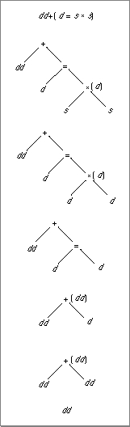

Evaluating Expressions Without Widest Need
Without widest-need evaluation, a complex expression is considered as a series of simple expressions (expressions with only one floating-point operation), and the evaluation format of each simple expression is determined separately. The evaluation format of a simple expression is either its semantic type (the widest format used for its operands) or the minimum evaluation format, whichever is wider. For example, consider the operations * dwhere s is a single-format variable and d is a double-format variable. The operation's semantic type is double because double is the widest format used for an operand. If the minimum format is defined to be single, the operation is evaluated in double precision because double is wider than single. If the minimum format is double-double, double-double precision is used because double-double is wider than double. Evaluating this operation in double-double precision means that the values of both variables will be converted to double-double format before the multiplication is performed and that double-double format will be used for temporary storage of the result.This expression evaluation method applies only to floating-point operations subject to the usual arithmetic conversions (automatic conversions performed in the C programming language). The following operations are subject to the usual arithmetic conversions:
The following operations are not subject to the usual arithmetic conversions:For example, consider the C expression
- assignment
- assignment of actual function arguments to formal function parameters
- explicit conversions to different data types (for example, casts in C)
dd + (d = s * s)where dd denotes a double-double format variable or number, d is double format, s is single format, and the minimum evaluation format is double. Without widest-need evaluation, this expression is treated as three simple expressions:The semantic type of the first simple expression (s
- s
*s- d assigned the result of s
*s- dd
+the result of d=s*s*s) is single, which is narrower than the minimum evaluation format, so it will be evaluated in double. The values of both of its operands are converted to double format and are then multiplied to produce a double result. The next simple expression is an assignment operation, which is not subject to the usual arithmetic conversions so the expression evaluation method does not apply. It produces a double format result also. Then, the last simple expression is considered. Its semantic type is double-double, so that will be the evaluation format. The result of the assignment is converted to double-double format, then added to the double-double variable. Figure 3-1 illustrates this process.Figure 3-1 Evaluating complex expressions without widest need
